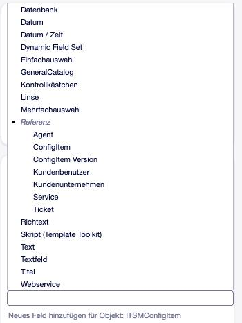
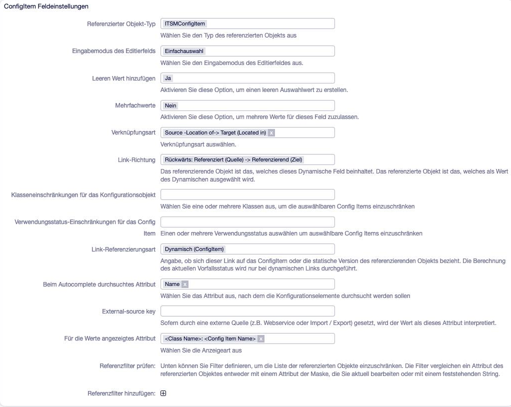

Dynamische Felder für Config Items¶
Alles, was an einem Config Item über Name, Status und Beschreibung hinausgeht — Seriennummer, Hersteller, Standort, Lizenzanzahl —, wird in dynamischen Feldern gespeichert. Die Klassendefinition legt nur fest, welche Felder eine Klasse verwendet und wo sie stehen; die Felder selbst werden vorher unter Admin → Dynamische Felder angelegt.
Die vollständigen Optionen jedes Feldtyps stehen in Feldtypen und ihre Optionen.
Grundsätzliches¶
Objekttyp. Felder für die CMDB haben den Objekttyp ITSM ConfigElement (in der englischen Oberfläche ITSM ConfigItem). Nur solche Felder lassen sich in einer Klassendefinition verwenden; ein Feld mit anderem Objekttyp wird beim Speichern der Definition als „nicht vorhanden“ abgelehnt.
Werte hängen an der Version. Jede Version eines Config Items hat ihre eigenen Feldwerte. Beim Erzeugen einer neuen Version werden die unveränderten Werte der Vorgängerversion übernommen. So bleibt nachvollziehbar, welchen Wert ein Feld in einer früheren Version hatte.
Nicht alles ist ein Feld. Name, Versionsbezeichnung, Verwendungsstatus, Vorfallstatus und Beschreibung sind feste Attribute jeder Version, keine dynamischen Felder. Dateianhänge werden ebenfalls getrennt gespeichert: normale Anhänge je Config Item, eingebettete Bilder der Beschreibung je Version.
Feldnamen und Namensräume. Die mitgelieferten Klassen verwenden Feldnamen mit
Namensraum, also einem Präfix vor dem ersten Bindestrich —
ITSMModel-SerialNumber, Location-ReferenceToBuilding. Das hält die Liste
der Felder übersichtlich, wenn viele Klassen eigene Felder mitbringen. Die
zulässigen Namensräume stehen in DynamicField::Namespaces; beim
Klassenimport werden neue Namensräume automatisch eingetragen (siehe
Klassen exportieren und importieren).
Tipp
Feldnamen nur aus Buchstaben, Ziffern und Bindestrich bilden. Der Klassenimport akzeptiert keine anderen Zeichen, und nur solche Namen lassen sich als Spalten in der Übersicht verwenden.
Welche Feldtypen stehen zur Verfügung?¶
Beim Objekttyp ITSM ConfigElement bietet Admin → Dynamische Felder an:
Gruppe |
Feldtypen |
|---|---|
Einfache Felder |
Text, Textarea, Richtext, Checkbox, Dropdown, Multiselect, Datum, Datum/Zeit, Titel |
Externe Werte |
Datenbank, Webservice |
Zusammengesetzte Felder |
Set (Feldgruppe), Script (Template Toolkit), Lens |
Referenzen |
Config Item, Config Item Version, Agent, Kundenbenutzer, Kundenfirma, Ticket, Service |
Aus dem General Catalog |
GeneralCatalog (Auswahlwerte aus einer Katalogklasse) |
Kontakt mit Daten (ContactWD) ist nur für Tickets verfügbar und wird für Config Items nicht angeboten.

Abb. 5 Feldtypen beim Anlegen eines Feldes für Config Items¶
Ein Feld anlegen und verwenden¶
Admin → Dynamische Felder → im Kasten ITSM ConfigElement den Feldtyp wählen.
Name (technisch, wird in der Klassendefinition verwendet) und Beschriftung vergeben, Optionen des Typs setzen, speichern.
Das Feld in der Klassendefinition in einen Abschnitt aufnehmen:
Sections: Hardware: Content: - DF: ITSMModel-SerialNumber Label: Seriennummer Mandatory: 1
Soll das Feld durchsuchbar sein oder in der Übersicht als Spalte erscheinen, die entsprechenden Einstellungen ergänzen (siehe Felder in Suche und Übersicht).
Label, Mandatory und Readonly werden in der Klassendefinition gesetzt,
nicht am Feld. Dasselbe Feld kann dadurch in zwei Klassen unterschiedlich heißen
oder in einer Pflicht sein und in der anderen nicht. Details:
Klassendefinition (YAML).
Felder nachträglich ändern¶
Jede Klassendefinition speichert eine Kopie der Feldeinstellungen. Wird ein Feld geändert — neue Auswahlwerte, andere Beschriftung, andere Filter —, wirkt das auf die Config Items erst, nachdem die Definitionen nachgezogen wurden: Admin → Dynamische Felder zeigt dann einen Hinweis und die Schaltfläche Sync CI Definitions. Was dabei mit bestehenden Config Items passiert, beschreibt Versionen der Definition.
Warnung
Die Aktualisierung erreicht nur Config Items in einem Verwendungsstatus mit der Funktionalität preproductive oder productive. Config Items in einem postproductive Status behalten die alten Feldeinstellungen — auch die alten Verknüpfungseinstellungen von Referenzfeldern.
Warnung
Ein umbenanntes Feld muss in allen Klassendefinitionen von Hand nachgetragen werden. Das Löschen eines Feldes wird von der Synchronisation nicht erfasst; das Feld vorher aus allen Definitionen entfernen.
Referenzfelder auf Config Items¶
Die Feldtypen Config Item und Config Item Version verweisen auf andere Config Items. Sie sind das Werkzeug für alles, was Config Items miteinander verbindet: Standorthierarchien (Raum → Gebäude → Standort), Abhängigkeiten (Server → Betriebssystem, Client → Lizenz) oder Zugehörigkeiten (Cluster → Server).

Abb. 6 Referenzfeld auf Config Items mit Klassenfilter und Verknüpfungseinstellungen¶
Eingabe¶
EditFieldMode· Eingabemodus des EditierfeldsWie der Wert gewählt wird: AutoComplete (Suchfeld), Dropdown (Liste) oder Multiselect (Liste mit Mehrfachauswahl). Bei AutoComplete ist ein leerer Wert immer möglich.
MultiValue· MehrfachwerteMehrere unabhängige Werte, jeder in einer eigenen Eingabezeile. Mit Multiselect nicht kombinierbar.
SearchAttribute· Beim Autocomplete durchsuchtes AttributWonach AutoComplete sucht: Name (Standard) oder Number.
DisplayType· Für die Werte angezeigtes AttributWie ein gewählter Wert angezeigt wird — mit Name oder Nummer, wahlweise mit vorangestelltem Klassennamen. Ohne Angabe: Name, in der Langform
Klasse: Name.
Auswahl einschränken¶
Welche Config Items überhaupt zur Auswahl stehen, bestimmen drei Filter. Sie wirken zusammen (UND):
ClassIDs· Klasseneinschränkungen für das KonfigurationsobjektKlassen, aus denen gewählt werden kann. Leer: alle Klassen.
Warnung
Enthält die Liste einen leeren Eintrag — typisch nach einem Klassenimport, bei dem eine referenzierte Klasse fehlte —, findet die Auswahl gar nichts mehr. Im Modus Einfachauswahl wird der gespeicherte Wert dann beim nächsten Speichern des Config Items still geleert. Siehe Klassen exportieren und importieren.
DeplStateIDs· Verwendungsstatus-Einschränkungen für das Config ItemVerwendungsstatus, die zur Auswahl stehen — etwa nur Produktiv und In Wartung, damit keine ausgemusterten Geräte zugeordnet werden. Leer: alle.
ReferenceFilterList· ReferenzfilterBeliebig viele Filterzeilen der Form Attribut des referenzierten Config Items gleich Attribut des aktuellen Objekts oder fester Text. Damit lassen sich abhängige Auswahlen bauen: Ein Feld Raum zeigt nur die Räume des Gebäudes, das im Feld Gebäude gewählt ist.
ReferenceFilterList: - ReferenceObjectAttribute: DynamicField_Location-ReferenceToBuilding EqualsObjectAttribute: DynamicField_Location-ReferenceToBuilding
Ändert sich das Vergleichsfeld in der Maske, wird die Auswahl neu berechnet; nicht mehr passende Werte werden geleert (AutoComplete) bzw. aus der Liste entfernt (Dropdown).
Bemerkung
Ist der Vergleichswert leer — im Beispiel: noch kein Gebäude gewählt —, bleibt die Auswahlliste leer. Das ist gewollt, überrascht aber beim ersten Test.
Bemerkung
Im Modus Dropdown und Multiselect akzeptiert OTOBO beim Speichern nur Werte, die auch angeboten wurden, oder den bereits gespeicherten Wert.
Verknüpfung erzeugen¶
Ein Referenzfeld speichert zunächst nur einen Verweis. Erst die Verknüpfungseinstellungen machen daraus eine Beziehung, die OTOBO an anderer Stelle auswertet.
LinkType· VerknüpfungsartLinktyp der Beziehung, z. B.
DependsOnoderLocationOf(siehe Verknüpfungen und Vorfallstatus-Vererbung). Das Feld wird nur angeboten, wenn zwischen den beiden Objekttypen überhaupt Linktypen erlaubt sind. Leer: keine Beziehung.LinkDirection· Link-RichtungRichtung der Beziehung:
ReferencingIsSource— vorwärts: das Config Item mit dem Feld ist Quelle, das gewählte Config Item Ziel (Standard),ReferencingIsTarget— rückwärts: das gewählte Config Item ist Quelle.
Die mitgelieferten Standortfelder sind rückwärts eingestellt: Ein Raum verweist auf sein Gebäude, die Beziehung lautet aber Gebäude ist Standort von Raum.
LinkReferencingType· Link-ReferenzierungsartNur bei Feldern an Config Items:
Dynamic— die Beziehung gilt für das Config Item (Standard),Static— die Beziehung gilt nur für die Version, in der der Wert gespeichert ist.
Die Berechnung des aktuellen Vorfallstatus berücksichtigt nur dynamische Beziehungen.
Mit gesetztem Linktyp führt OTOBO die Beziehung in einer CMDB-eigenen Verknüpfungstabelle. Diese Tabelle wird ausgewertet von:
Abschnitten vom Typ
ConfigItemLinksin der Detailansicht (etwa Verwendet von, siehe Klassendefinition (YAML)),der Baumansicht eines Config Items,
der Druckansicht,
der Vererbung des Vorfallstatus (siehe Verknüpfungen und Vorfallstatus-Vererbung).
Warnung
Ohne LinkType entsteht keine Beziehung: Das Config Item erscheint
weder in Backlink-Abschnitten noch in der Baumansicht, und ein Vorfall wird
nicht weitergegeben. Wer Standorte oder Abhängigkeiten abbilden will, muss
den Linktyp setzen.
Die Beziehung wird aus dem Feldwert erzeugt — Referenzen zwischen Config Items legen keine klassische Verknüpfung an, wie sie über Verknüpfen im Menü entsteht. Umgekehrt werden klassische Verknüpfungen zwischen Config Items in die CMDB-Verknüpfungstabelle übernommen und stehen damit ebenfalls in Baumansicht und Backlink-Abschnitten.
Wurden Verknüpfungseinstellungen an vielen Feldern geändert, baut der Konsolenbefehl die Tabelle vollständig neu auf:
bin/otobo.Console.pl Maint::ITSM::ConfigItem::RebuildLinkTable
Bemerkung
Der Neuaufbau berücksichtigt bei dynamischen Beziehungen nur die Werte der jeweils neuesten Version eines Config Items.
Referenzfelder auf Config Items gibt es auch an Tickets. Dort erzeugt ein gesetzter Linktyp eine klassische Verknüpfung zwischen Ticket und Config Item.
Config Item oder Config Item Version?¶
Config Item |
Config Item Version |
|
|---|---|---|
Gespeichert wird |
das Config Item |
die Version, die bei der Auswahl aktuell war |
Anzeige |
immer der aktuelle Name |
Name, wie er in dieser Version lautete |
Lens-Felder zeigen |
Werte der neuesten Version |
Werte genau der gespeicherten Version |
Vorfallstatus-Vererbung |
ja (mit |
nein |
In einem Set verwendbar |
ja |
nein |
Config Item ist der Normalfall. Config Item Version eignet sich, wenn ein Stand festgehalten werden soll — etwa „dieser Vertrag in der Fassung, die bei der Beschaffung galt“. Spätere Versionen des Ziels werden nicht nachverfolgt.
Weitere Referenzfelder¶
Auch Agenten, Kundenbenutzer, Kundenfirmen, Tickets und Services lassen sich referenzieren. Typische Verwendung an Config Items:
Agent — zuständiger Administrator; die Auswahl lässt sich mit
Groupauf Mitglieder bestimmter Gruppen einschränken.Kundenbenutzer — Benutzer eines Geräts. Eingabe nur per AutoComplete.
Kundenfirma — Eigentümer oder Lieferant.
Service — Service, für den das Config Item relevant ist.
Ticket — etwa das Beschaffungsticket; auswählbar nach Queue und Tickettyp.
Mit gesetztem Linktyp (LinkObjectForReferenceType) erzeugen diese Felder eine
klassische Verknüpfung zum referenzierten Objekt, sofern der Linktyp zwischen den
Objekttypen erlaubt ist.
Config Items im Kunden- und Kundenbenutzer-Center¶
Die Widgets Assigned CIs im Kundeninformationscenter und im Kundenbenutzer-Informationscenter zeigen die Config Items eines Kunden. Welche das sind, entscheidet ein Referenzfeld, dessen Name im Widget eingetragen wird:
AgentCustomerInformationCenter::Backend###0060-CIC-ITSMConfigItemCustomerCompanySchlüssel
ConfigItemKey: Name eines Kundenfirma-Referenzfeldes. Ab Werk leer — das Widget zeigt dann keine Config Items.AgentCustomerUserInformationCenter::Backend###0060-CUIC-ITSMConfigItemCustomerUserSchlüssel
ConfigItemKey: Name eines Kundenbenutzer-Referenzfeldes. Ab WerkContact-User(Feld aus den mitgelieferten Klassen).
Mit ShownClasses lässt sich die Anzeige zusätzlich auf bestimmte Klassen
beschränken.
Warnung
Ein Referenzfeld auf Kundenfirma oder Kundenbenutzer allein genügt nicht:
Ohne passenden ConfigItemKey bleibt das Widget leer.
Set — Feldgruppen¶
Ein Set fasst mehrere Felder zu einer Gruppe zusammen. Mit MultiValue
wird die Gruppe wiederholbar — so hat ein Computer beliebig viele
Netzwerkschnittstellen mit jeweils IP-Adresse, MAC-Adresse und Hostname, oder
beliebig viele Festplatten mit Typ, Kapazität und Seriennummer.
Die enthaltenen Felder werden im Schlüssel Include als YAML angegeben, als
Liste von Feldern oder als Raster:
- DF: ITSMStorage-Type
- DF: ITSMStorage-Capacity
- Grid:
Columns: 2
Rows:
- - DF: ITSMStorage-Manufacturer
- DF: ITSMStorage-SerialNumber
Regeln für die enthaltenen Felder:
Sie müssen bereits existieren und denselben Objekttyp haben wie das Set.
Nicht aufgenommen werden können: Set, Titel, Datenbank, Webservice und Config Item Version.
In der Klassendefinition wird nur das Set selbst eingetragen (DF: mit dem
Namen des Sets); die enthaltenen Felder erscheinen automatisch. In der
Detailansicht nimmt ein Set die volle Breite des Abschnitts ein. In der Suche
stehen die enthaltenen Felder als Set::Feld zur Verfügung, wenn das Set auf
einem Agenten-Reiter steht.
Lens — Werte eines referenzierten Objekts¶
Ein Lens-Feld zeigt ein Feld des Objekts an, auf das ein Referenzfeld
verweist. Beispiel: Ein Client verweist über ITSM-ReferenceToLicense auf
eine Lizenz; das Lens-Feld ITSM-LensToLicenseType zeigt am Client den
Lizenztyp, der an der Lizenz gepflegt wird.
ReferenceDFDas Referenzfeld des aktuellen Objekts.
AttributeDFDas Feld am referenzierten Objekt, dessen Wert angezeigt wird.
Als Attributfeld sind in OTOBO 11.0 zulässig: Checkbox, Datum, Datum/Zeit, Dropdown, GeneralCatalog, Multiselect, Set, Text, Textarea und Titel.
Ein Lens-Feld speichert selbst nichts. Referenziert es ein Config Item, zeigt es den Wert der neuesten Version; bei einem Feld vom Typ Config Item Version den Wert dieser Version.
Warnung
Ein Lens-Feld ist nicht nur Anzeige: Wird es in der Bearbeiten-Maske
geändert, schreibt OTOBO den Wert in das referenzierte Objekt — gegebenenfalls
entsteht dort eine neue Version. Soll nur angezeigt werden, das Feld in der
Klassendefinition mit Readonly: 1 eintragen, wie es die mitgelieferten
Klassen tun.
Innerhalb eines Sets wertet ein Lens-Feld bei einem mehrwertigen Referenzfeld nur den ersten Wert aus.
OTOBO 11.1
In 11.1 dürfen auch Referenzfelder Attributfeld einer Lens sein (Agent,
Kundenbenutzer, Kundenfirma, Ticket, FAQ, Config Item, Config Item Version)
sowie Script-Felder. Die Einstellung MultiValue einer Lens folgt
automatisch ihrem Attributfeld.
Script — berechnete Felder¶
Ein Script-Feld berechnet seinen Wert mit einer Template-Toolkit-Vorlage aus anderen Feldern — etwa den Gesamtspeicher aus Anzahl und Größe der Speichermodule:
[% Count = "DynamicField_ITSMMemory-Count" %]
[% Capacity = "DynamicField_ITSMMemory-Capacity" %]
[% Total = Data.$Count * Data.$Capacity %][% Total %] GB
In der Vorlage stehen unter Data die Attribute des Config Items (Name,
Number, Class, DeplState, InciState, VersionString …) und
alle Felder als DynamicField_<Name> zur Verfügung. Zeilenumbrüche werden aus
dem Ergebnis entfernt.
Wann der Wert entsteht:
In der Bearbeiten-Maske wird er live berechnet, sobald alle Felder aus
RequiredArgsgefüllt sind und sich eines der Felder ausAJAXTriggersändert. Das ist nur eine Vorschau.Gespeichert wird der Wert ausschließlich, wenn eines der Ereignisse aus
UpdateEventseintritt. Dann berechnet OTOBO den Wert aus den gespeicherten Daten und schreibt ihn in die aktuelle Version.
Zur Auswahl für UpdateEvents stehen: ConfigItemCreate,
ConfigItemUpdate, VersionCreate, VersionUpdate,
DeploymentStateUpdate, IncidentStateUpdate, NameUpdate,
AttachmentAddPost, AttachmentDeletePost, VersionDelete und
ConfigItemDelete.
Warnung
Ohne passende UpdateEvents wird ein Script-Feld nie gespeichert — auch
wenn die Maske einen Wert anzeigt. Die Ereignisse so wählen, dass sie bei den
Änderungen auftreten, nach denen der Wert neu berechnet werden soll.
Script-Felder in einem Set werden je Zeile des Sets berechnet. In der
Klassendefinition sollten sie mit Readonly: 1 eingetragen werden.
Felder in Suche und Übersicht¶
Suche¶
Ein Feld ist in der Agentensuche nur verfügbar, wenn
es in
ITSMConfigItem::Frontend::AgentITSMConfigItemSearch###DynamicFieldeingetragen ist —1aktiviert,2aktiviert und standardmäßig eingeblendet —, undes in einem Feldabschnitt auf einem Reiter steht, den der Agent sehen darf.
Die Einstellung ist ab Werk leer: Ohne Eintrag bietet die Suche keine
dynamischen Felder an. Für die Kundenoberfläche gilt entsprechend
ITSMConfigItem::Frontend::CustomerITSMConfigItemSearch###DynamicField.
ITSMConfigItem::Frontend::AgentITSMConfigItemSearch###DynamicField:
ITSMModel-SerialNumber: 1
ITSMModel-Manufacturer: 2
Bemerkung
Die Feldsuche berücksichtigt nur die neueste Version eines Config Items. Wer nach einem früheren Wert sucht, findet das Config Item nicht.
Übersicht¶
Als Spalte der CMDB-Übersicht wird ein Feld mit DynamicField_<Name> in
ITSMConfigItem::Frontend::AgentITSMConfigItem###DefaultColumns eingetragen
(1 wählbar, 2 standardmäßig sichtbar) oder klassenbezogen in
…###ClassColumnsAvailable und …###ClassColumnsDefault. Ob die Spalte
sortier- und filterbar ist, hängt vom Feldtyp ab (siehe
Feldtypen und ihre Optionen).
Werte aus Import und Webservice: ImportSearchAttribute¶
Kommt ein Wert aus Import/Export oder über den Webservice, stellt sich die
Frage, wie ein Referenzfeld zu verstehen ist: Steht in der Spalte Server-042
eine Nummer, ein Name oder eine interne ID?
ImportSearchAttribute (in der Oberfläche External-source key) beantwortet
das. Mögliche Werte beim Typ Config Item: Name, Number oder ein beliebiges
Feld als DynamicField_<Name> — etwa eine Inventarnummer.
Leer (so in allen mitgelieferten Klassen): Der Wert wird als interne ID übernommen.
Gesetzt: OTOBO sucht das Objekt mit genau diesem Wert. Bei genau einem Treffer wird dessen ID gespeichert.
Warnung
Findet die Suche kein oder mehr als ein Objekt, bleibt das Feld leer. Eine Fehlermeldung gibt es dafür nicht, nur einen Hinweis im Systemprotokoll (Stufe notice).
Warnung
Bei Werten aus externen Quellen gelten der Klassenfilter (ClassIDs)
und die ReferenceFilterList nicht — nur der Filter auf Verwendungsstatus.
Gibt es denselben Namen in mehreren Klassen, ist das Ergebnis mehrdeutig und
das Feld bleibt leer. Für Importe daher ein eindeutiges Merkmal wählen, etwa
die Nummer oder eine Inventarnummer.
Andere Referenztypen kennen eigene Werte: Agent und Kundenbenutzer UserLogin
oder PostMasterSearch (E-Mail-Adresse), Ticket TicketNumber, Service
Name. Mehr zu Import und Webservice: Import und Export von Config Items,
Webservice (Generic Interface).